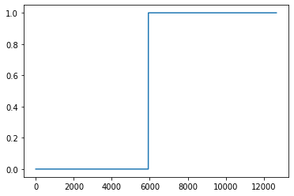

X0 = torch.stack([torchvision.io.read_image(str(zf)) for zf in zero_fnames])X1 = torch.stack([torchvision.io.read_image(str(of)) for of in one_fnames])X = torch.concat([X0,X1],axis=0).reshape(-1,1*28*28).float()y = torch.tensor([0.0]*len(X0) + [1.0]*len(X1)).reshape(-1,1)
for epoc inrange(200): yhat = net(X) loss =-torch.mean(y*torch.log(yhat) + (1-y)*torch.log(1-yhat)) loss.backward() optimizr.step() optimizr.zero_grad()
plt.plot(y)plt.plot(yhat.data,'o')

학습이 안된다.
아래의 지침에 따라 200 epoch 학습을 진행하라. 학습이 잘 되는가?
이미지의 값을 0과 1사이로 규격화 하라. (Xnp = Xnp/255 를 이용하세요!) 손실함수는 BECLoss를 이용할 것. torch.nn.BCELoss()를 사용하지 않고 수식을 직접 입력할 것. 옵티마이저는 아담으로 설정할 것. 학습률은 lr=0.002로 설정할 것.